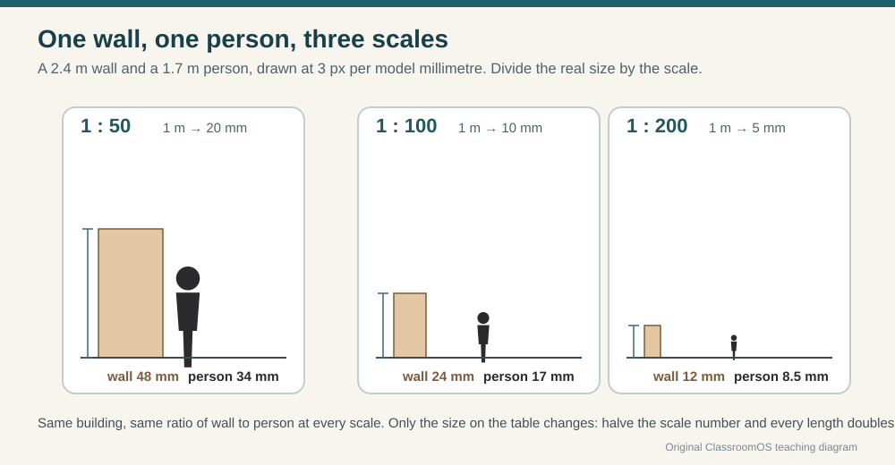
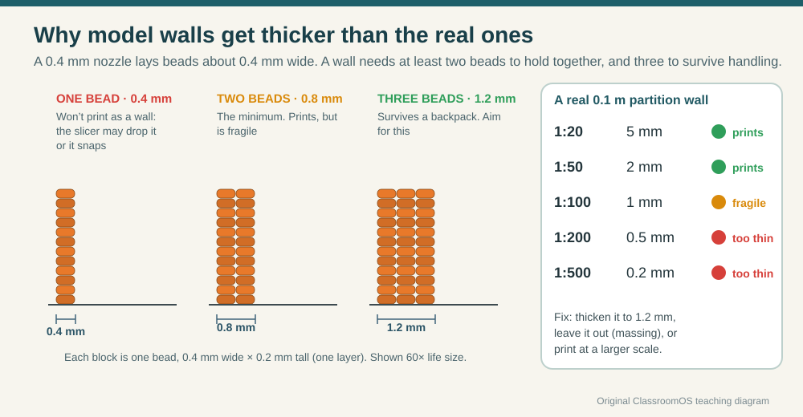
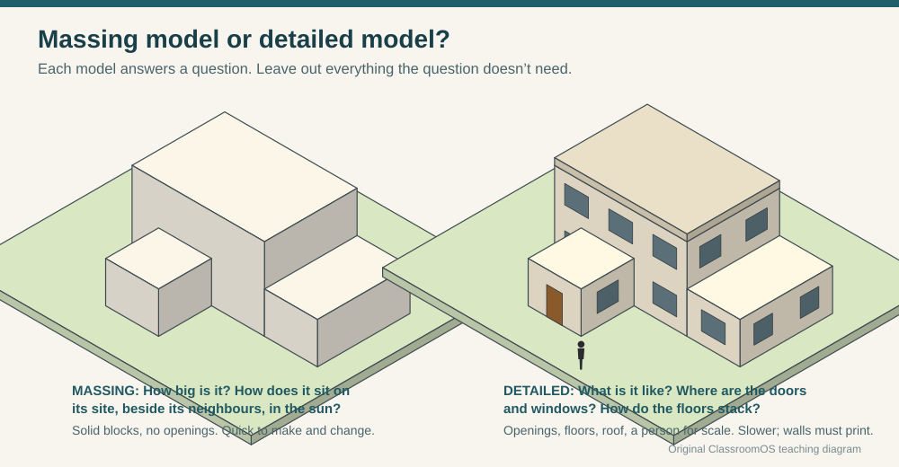
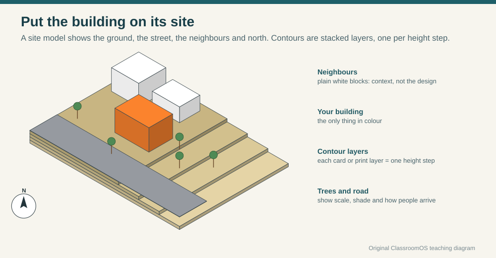
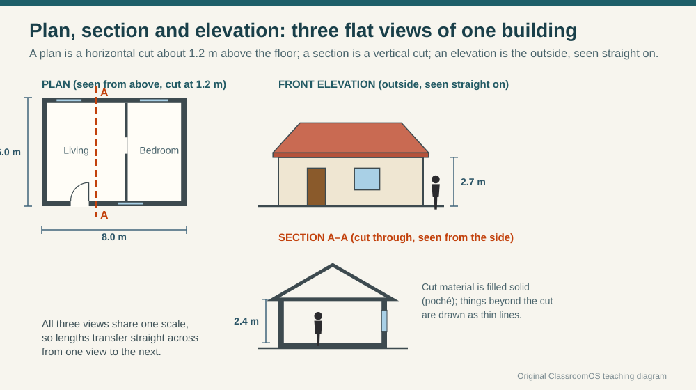
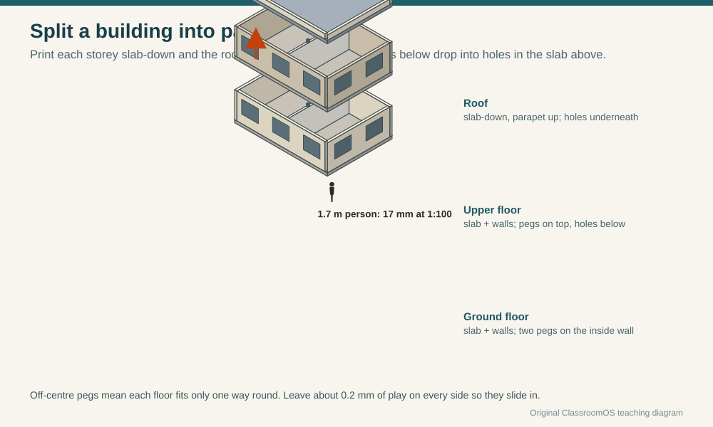
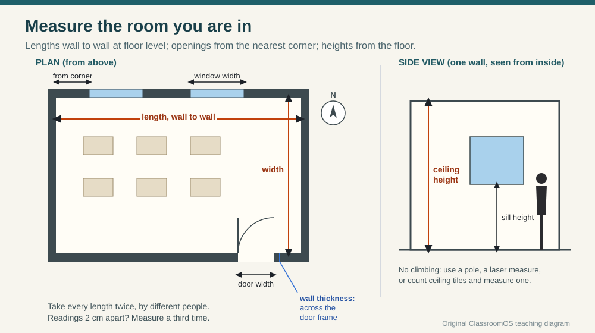

3D Design · Architecture · Scale Models
Put a Building on Your Desk
Architects decide most of a building before anyone pours concrete, and they decide a lot of it with models small enough to hold. A model only tells the truth if every part of it is shrunk by the same amount, so the first skill is the scale. The second is knowing what the printer can't shrink: a real wall a hand's width thick becomes thinner than a hair. In this lesson you work out both, then measure the room you are sitting in and build it.
Start with the room you're in
Look at the door. How tall is it? How wide? Now hold your thumb and finger 2 cm apart: on a 1:100 model, that is the whole door. Your classroom, 9 m long, would be 90 mm, the length of your hand. A pencil lead, 0.5 mm across, would be a wall 5 cm thick: thinner than any real wall, and too thin to print.
1 · Reading a scale ratio
A scale ratio like 1:50 reads "one to fifty": one unit on the model stands for fifty of the same unit in real life. To go from real to model, divide by the scale; from model to real, multiply.

| Scale | 1 m becomes | Good for |
|---|---|---|
| 1:20 | 50 mm | One room with its furniture; a staircase; a detail of a wall |
| 1:50 | 20 mm | A classroom, a small house with walls, doors and windows |
| 1:100 | 10 mm | A whole house or school block, floor by floor |
| 1:200 | 5 mm | A big building as a massing model; a street |
| 1:500 | 2 mm | A site: blocks for buildings, the street, the trees |
These come from the international standard list of drawing scales (ISO 5455), which keeps to 1, 2 and 5 times powers of ten so that a ruler can be read in your head. In the United States, drawings often use an inch scale instead: ¼ inch = 1 foot means ¼ in on paper is 12 in of building, so 12 ÷ ¼ = 1:48; ⅛ in = 1 ft is 1:96.
Scale calculator
Type any real length, choose a scale, and see it on the model next to a 1.7 m person at the same scale. Then work backwards from a model measurement, and find the largest scale at which a building fits the class printer.
2 · The wall that disappears: minimum thickness at scale
Lengths shrink politely. Thicknesses don't, because a filament printer lays plastic in beads about as wide as its nozzle, 0.4 mm. One bead alone doesn't make a wall that holds together; two beads (0.8 mm) is the least that prints, and three beads (1.2 mm) survives being handled. Floors and roofs need about four 0.2 mm layers (0.8 mm) to be solid instead of floppy.

3 · Massing model or detailed model?
Each model answers one question, so it leaves out everything that question doesn't need. A massing model is solid blocks: how big the building is, how it sits on its site, what shadow it throws on its neighbours. A detailed model has walls, openings and floors: what it is like inside and how it is put together.


4 · From drawings to a model
Buildings are designed as flat drawings first, all at one scale so lengths carry from one to the next. A floor plan is a horizontal cut about 1.2 m above the floor, seen from above; a section is a vertical cut; an elevation is the outside, seen straight on. A model is the plan pulled up to the height the section gives it.

Practise reading and drawing these in Blueprint Drafting. To pull any flat outline up into a solid, see Profiles: Extrude, Revolve, Loft, Sweep.
5 · Plan-to-Model maker
Drag rectangles on the 0.5 m grid to make rooms (rooms that touch share a wall), add doors on any wall, then set the scale, the storeys and the wall thicknesses. Walls are coloured by how they will print: green is fine, orange is fragile, red is too thin. Switch to Massing block to see the same plan as one solid, or Split storeys to lay the floors out separately on the bed. Download the STL when every check is green.

The maker keeps to a 0.5 m grid and boxy rooms so it can check every wall. For exact sizes, sloped roofs, real window positions and a site, build in Workbench: an Architecture project works in metres on a 30 m site and prints at 1:100. Its House with lift-off roof and School block templates are good to take apart first.
6 · Hands-on task: measure the classroom
Measure your classroom and build it as a scale model. Work in pairs: one holds the zero end of the tape, one reads.

Steps
- Sketch the plan first, big and roughly to shape, with north marked. Measurements go on the sketch as you take them.
- Measure length and width wall to wall at floor level, twice each, by different people. If the two readings differ by more than 2 cm, measure a third time.
- Measure the ceiling height (a tape held up a wall, a laser measure, or count ceiling tiles and measure one).
- Measure every door and window: its width, how far it is from the nearest corner, and for windows the sill height.
- Measure the wall thickness across the open door frame.
- Choose a scale with the calculator so the room fits the bed, and work out every model size. Check the wall thickness at that scale: will it print?
- Build it: draw it in the Plan-to-Model maker (round to the 0.5 m grid), or in Workbench at exact sizes. Add a scale figure.
- Safety: no climbing on chairs or desks to reach the ceiling; use a pole, a laser measure, or ceiling tiles. Let the tape wind back slowly: its hook can cut.
| What | Reading 1 (m) | Reading 2 (m) | Use (m) | Model (mm) |
|---|---|---|---|---|
| Room length | ||||
| Room width | ||||
| Ceiling height | ||||
| Door width × height | ||||
| Wall thickness (door frame) | ||||
| Window 1 width · from corner | ||||
| Window 2 width · from corner |
| Scale, and why | |
|---|---|
| Wall at this scale (mm) · prints? | |
| Massing or detailed? What question does it answer? | |
| What I thickened, left out or simplified | |
| Check: a classmate measures the model × scale. Does it match the room? |
Use Save answers in the lesson's heart | save | print pill to keep the record sheets in your browser, or print the lesson as a handout for measuring day.
Pick your level
K–2 · Big room, little room
Pace out the classroom in footsteps, then build it from blocks on a sheet where one square is one step. Stand a toy figure in it: is the door tall enough for them?
3–5 · Divide by the scale
Measure the room's length, width and door with a tape. Use the calculator at 1:50 to find each model size, and draw the room in the maker.
6–8 · Will it print?
Fill in the whole record sheet. Choose a scale that fits the bed, check every wall's thickness at that scale, and decide what to thicken. Print a massing model and a walls model and compare.
9–12 · Model the building
Build the classroom (or the school wing) at exact sizes in Workbench with real window positions, split into floors with pegs. Explain why areas scale by N² and volumes by N³.
Checkpoint
You're ready to move on when you can:
- Convert a real length to a model length at any scale, and back.
- Say which of two scales makes the bigger model, and why.
- Work out the thinnest real wall that prints at a scale, and three ways to deal with one that is too thin.
- Choose a massing or a detailed model for a question, and explain the choice.
- Measure a room carefully enough that a classmate can check your model against it.
Next: draw the plan properly in Blueprint Drafting, cut windows and doors in Make an Opening, or prepare your print in 3D Printing. If the floors won't sit together, see Joining Parts and Measure and Fit.
Practice Problems
Easy1. A wall is 6 m long. How long is it on a 1:100 model (mm)?
Easy2. How tall is a 1.7 m person on a 1:50 model (mm)?
Easy3. Which makes the bigger model of the same building?
Medium4. A model wall measures 45 mm on a 1:200 model. How long is the real wall (m)?
Medium5. A 0.1 m inside wall at 1:100 is how thick on the model, and how does it print?
Medium6. "¼ inch = 1 foot" is what scale? Type N in 1:N.
Medium7. What is the thinnest real wall that prints safely (1.2 mm) on a 1:200 model (m)?
Medium8. The printer bed is 260 × 160 mm. A classroom is 9 m × 7 m. Which is the largest scale (from 1:20, 1:50, 1:100) that fits?
Challenge9. A classroom floor is 63 m². What is its area on a 1:100 model (cm²)?
Challenge10. A massing block stands for 2,000 m³ of building. At 1:100, how much plastic is it (cm³)?
Vocabulary
- Scale
- The ratio between a model's size and the real thing's, such as 1:100.
- Scale model
- A model with every length shrunk (or enlarged) by the same ratio.
- Scale bar
- A drawn ruler marked in real units, so the model or drawing can be measured even after it is copied larger or smaller.
- Scale figure
- A person (or car, or tree) made at the model's scale so everyone can read its size.
- Massing model
- A model of solid blocks showing a building's size and shape, without openings or detail.
- Floor plan
- A drawing of a building cut horizontally about 1.2 m above the floor and seen from above.
- Section
- A drawing of a building cut vertically, showing heights and floors.
- Elevation
- A drawing of one outside face of a building, seen straight on.
- Storey
- One floor level of a building.
Sources
- ISO 5455:1979, Technical drawings — Scales (iso.org): the recommended scales 1:2, 1:5, 1:10 and their multiples by powers of ten (1:20, 1:50, 1:100, 1:200, 1:500 …).
- NIST Office of Weights and Measures, SI Units: Length (1 inch = 25.4 mm exactly; 1 foot = 12 inches), for the inch scales.
- Bead and layer rules: this site's 3D Printing and Measure and Fit lessons and Forge's print check (0.4 mm nozzle; walls of two beads minimum and three to handle; 0.2 mm layers). Test your own printer: thin-wall limits vary with the slicer.
- Printer bed: MakerBot Sketch Large build volume 260 × 160 × 230 mm, as set in the site's shared printer table (
assets/js/fab-io.mjs).
Next: Blueprint Drafting · Profiles · 3D Printing · Workbench: School block · Forge